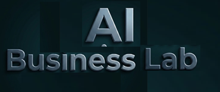

Laddar lärandemoduler...

Interaktiva artefakter som skapar engagerande upplevelser och gör komplex information enkel att förstå.
AI-Wiki – en intelligent kunskapsbas som avlastar kognitivt huvudet, bevarar företagets kunskap och gör information, processer och expertis tillgänglig när den behövs.
Ge liv åt din information med interaktiva artefakter:
Podcast, video, presentatioer, rapport, infografik, frågor/svar, quiz, mm.
Se nedan
En proaktiv guide med "ögon och öron" som hjälper användaren att navigera i real tid på din sajt Se video nedan
En AI Voice Agent för kundservice och marknadsföring. Klicka på "Start a Call" nedan
En intelligent kunskapsbas som avlastar ditt huvud och säkrar din verksamhets expertis
Se hur SwedAI Academy (online utbildning) använder Artefakter för sina kurser, en AI Guide för at guida om sin webbsajt och AI Voice Agent för att ge kundservice
Laddar lärandemoduler...